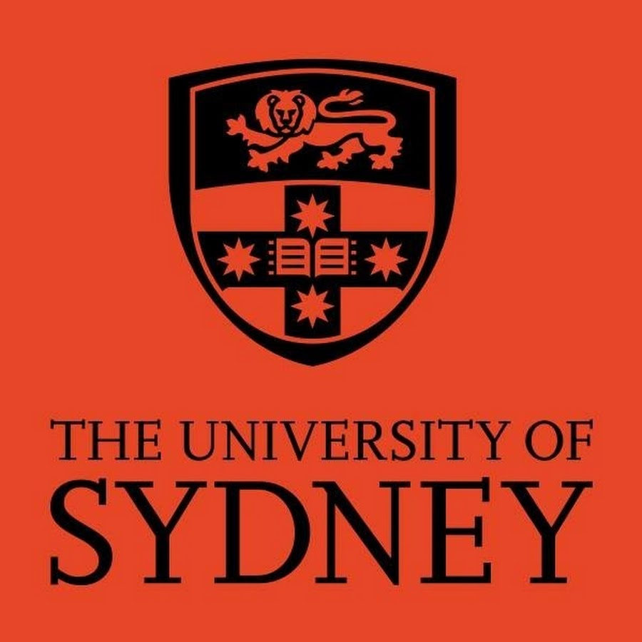

Bachelor of Science
Data Science and Economics
2018 - current- Data Science major with a focus on data analysis, storage, and visualisation. Completed a capstone project in classifying the risk of kidney graft rejection based on gene expression data. Completed an industry unit on integrating AI into Westpac’s services. Secondary Economics major focusing primarily on the macroeconomics side.
- First year programming and Mathematics (Algebra, Calculus, Discrete), intermediate Information Systems and Computer Systems.
- OLE’s in STEM communication and Reading and Writing in Mathematics.

Higher School Certificate
2012 - 2017- First in Physics, Chemistry, Biology. Second in Ancient History.
- Year 12 prefect and year 10 peer support.
- Participated in inter-school debates and philosophy conventions.
- Winner of 2014 science competition.